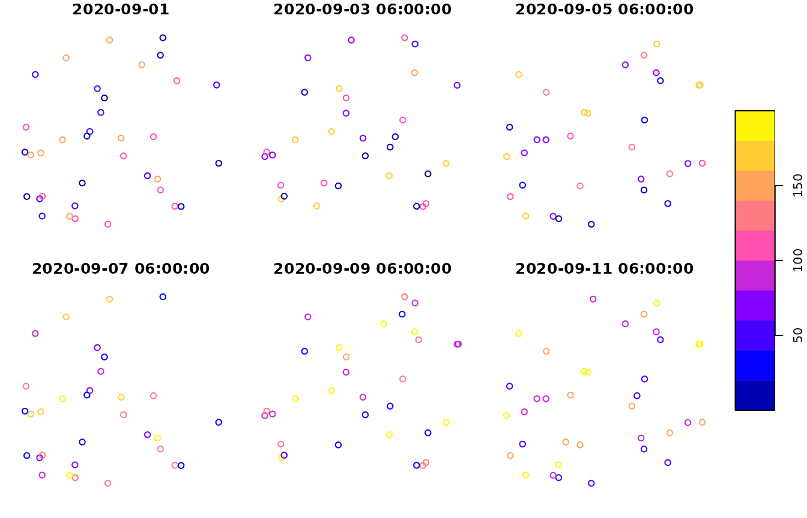
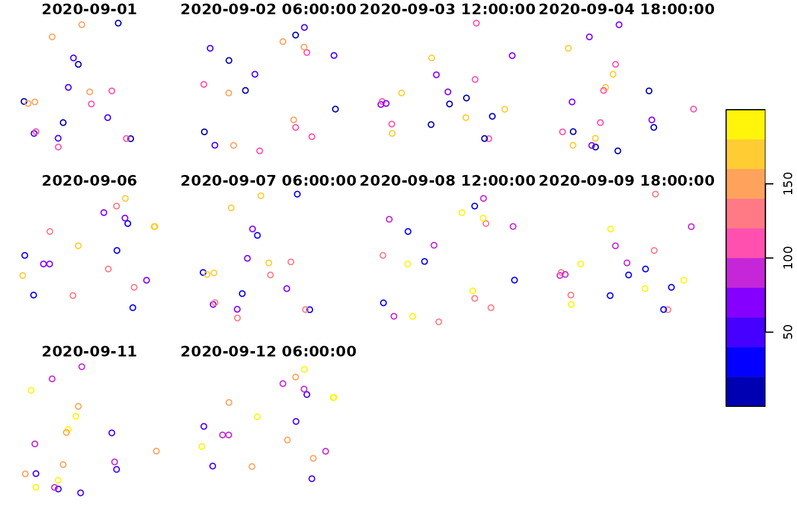
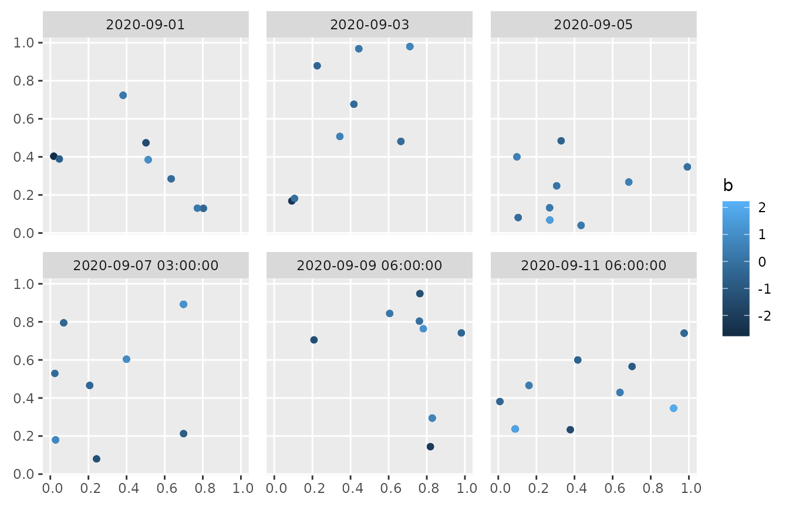
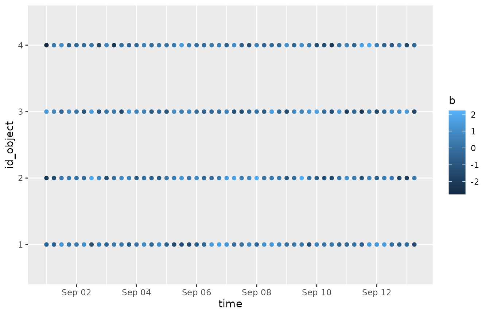
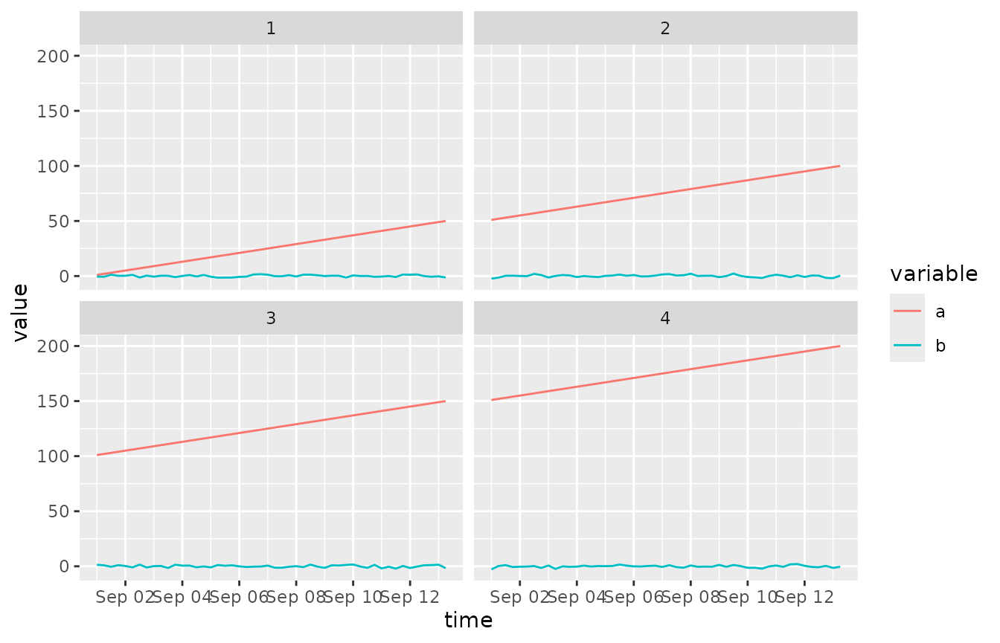

Introduction to sftime
Benedikt Gräler, Edzer Pebesma
2022-12-07
Source:vignettes/sftime.Rmd
sftime.RmdThe package sftime extends package sf to store and handle spatiotemporal data. To this end, sftime introduces a dedicated time column that stores the temporal information alongside the simple features column of an sf object.
The time column can consists of any collection of a class that allows to be sorted - reflecting the native order of time. Besides well-known time classes such as Date or POSIXct, it also allows for custom class definitions that come with the necessary methods to make sorting work (we will see a example below).
This vignette briefly explains and illustrates the ideas and decisions behind the implementation of sftime.
# load required packages
library(sftime)
#> Loading required package: sf
#> Linking to GEOS 3.8.0, GDAL 3.0.4, PROJ 6.3.1; sf_use_s2() is TRUE
library(sf)
library(stars)
#> Loading required package: abind
library(spacetime)
library(ggplot2)
library(tidyr)
library(magrittr)
#>
#> Attaching package: 'magrittr'
#> The following object is masked from 'package:tidyr':
#>
#> extractThe sftime class
An sftime object is an sf object with an additional time column that contains the temporal information alongside the simple features column. This allows it to handle irregular and regular temporal information.
For spatiotemporal data with regular temporal data (raster or vector data cubes: data where each geometry is observed at the same set of time instances), package stars is developed as a powerful alternative (e.g. time series of remote sensing imagery, regular measurements of entire measurement network). sftime fills the gap for data where arbitrary combinations of geometry and time occur, including irregularly collected sensor data or (spatiotemporal) point pattern data.
sftime objects can be constructed directly from sfc objects by combining them with a vector representing temporal information:
# example sfc object
x_sfc <-
sf::st_sfc(
sf::st_point(1:2),
sf::st_point(c(1,3)),
sf::st_point(2:3),
sf::st_point(c(2,1))
)
# create an sftime object directly from x_sfc
x_sftime1 <- sftime::st_sftime(a = 1:4, x_sfc, time = Sys.time()- 0:3 * 3600 * 24)
# first create the sf object and from this the sftime object
x_sf <- sf::st_sf(a = 1:4, x_sfc, time = x_sftime1$time)
x_sftime2 <- sftime::st_sftime(x_sf)
x_sftime3 <- sftime::st_as_sftime(x_sf) # alernative option
identical(x_sftime1, x_sftime2)
#> [1] TRUE
identical(x_sftime1, x_sftime3)
#> [1] TRUE
x_sftime1
#> Spatiotemporal feature collection with 4 features and 1 field
#> Geometry type: POINT
#> Dimension: XY
#> Bounding box: xmin: 1 ymin: 1 xmax: 2 ymax: 3
#> CRS: NA
#> Time column with classes: 'POSIXct', 'POSIXt'.
#> Ranging from 2022-12-04 08:21:01 to 2022-12-07 08:21:01.
#> a x_sfc time
#> 1 1 POINT (1 2) 2022-12-07 08:21:01
#> 2 2 POINT (1 3) 2022-12-06 08:21:01
#> 3 3 POINT (2 3) 2022-12-05 08:21:01
#> 4 4 POINT (2 1) 2022-12-04 08:21:01Methods for sftime objects are:
methods(class = "sftime")
#> [1] [ [[<- $<- cbind
#> [5] coerce drop_na filter gather
#> [9] initialize nest pivot_longer plot
#> [13] print rbind separate_rows separate
#> [17] show slotsFromS3 spread st_as_sftime
#> [21] st_cast st_crop st_difference st_drop_geometry
#> [25] st_filter st_intersection st_join st_sym_difference
#> [29] st_time st_time<- st_union transform
#> [33] unite unnest
#> see '?methods' for accessing help and source codeMethods for sf objects which are not listed above work also for sftime objects.
Functions to get or set the time column of an sftime object
Functions to get or set the time column of an sftime object are:
# get the values from the time column
st_time(x_sftime1)
#> [1] "2022-12-07 08:21:01 UTC" "2022-12-06 08:21:01 UTC"
#> [3] "2022-12-05 08:21:01 UTC" "2022-12-04 08:21:01 UTC"
x_sftime1$time # alternative way
#> [1] "2022-12-07 08:21:01 UTC" "2022-12-06 08:21:01 UTC"
#> [3] "2022-12-05 08:21:01 UTC" "2022-12-04 08:21:01 UTC"
# set the values in the time column
st_time(x_sftime1) <- Sys.time()
st_time(x_sftime1)
#> [1] "2022-12-07 08:21:01 UTC" "2022-12-07 08:21:01 UTC"
#> [3] "2022-12-07 08:21:01 UTC" "2022-12-07 08:21:01 UTC"
# drop the time column to convert an sftime object to an sf object
st_drop_time(x_sftime1)
#> Simple feature collection with 4 features and 1 field
#> Geometry type: POINT
#> Dimension: XY
#> Bounding box: xmin: 1 ymin: 1 xmax: 2 ymax: 3
#> CRS: NA
#> a x_sfc
#> 1 1 POINT (1 2)
#> 2 2 POINT (1 3)
#> 3 3 POINT (2 3)
#> 4 4 POINT (2 1)
x_sftime1
#> Spatiotemporal feature collection with 4 features and 1 field
#> Geometry type: POINT
#> Dimension: XY
#> Bounding box: xmin: 1 ymin: 1 xmax: 2 ymax: 3
#> CRS: NA
#> Time column with classes: 'POSIXct', 'POSIXt'.
#> Ranging from 2022-12-07 08:21:01 to 2022-12-07 08:21:01.
#> a x_sfc time
#> 1 1 POINT (1 2) 2022-12-07 08:21:01
#> 2 2 POINT (1 3) 2022-12-07 08:21:01
#> 3 3 POINT (2 3) 2022-12-07 08:21:01
#> 4 4 POINT (2 1) 2022-12-07 08:21:01
# add a time column to an sf object converts it to an sftime object
st_time(x_sftime1, time_column_name = "time") <- Sys.time()
class(x_sftime1)
#> [1] "sftime" "sf" "data.frame"
# These can also be used with pipes
x_sftime1 <-
x_sftime1 %>%
st_drop_time() %>%
st_set_time(Sys.time(), time_column_name = "time")Conversion to class sftime
sftime supports coercion to sftime objects from the following classes (grouped according to packages):
- sf: sf
- stars: stars
- spacetime: STI, STIDF
- trajectories: Track, Tracks, TracksCollection
- sftrack: sftrack, sftraj
Conversion from sf objects:
# define the geometry column
g <-
st_sfc(
st_point(c(1, 2)),
st_point(c(1, 3)),
st_point(c(2, 3)),
st_point(c(2, 1)),
st_point(c(3, 1))
)
# crate sf object
x4_sf <- st_sf(a = 1:5, g, time = Sys.time() + 1:5)
# convert to sftime
x4_sftime <- st_as_sftime(x4_sf)
class(x4_sftime)
#> [1] "sftime" "sf" "data.frame"Conversion from stars objects:
# load sample data
x5_stars <- stars::read_ncdf(system.file("nc/bcsd_obs_1999.nc", package = "stars"), var = c("pr", "tas"))
#> Will return stars object with 32076 cells.
#> No projection information found in nc file.
#> Coordinate variable units found to be degrees,
#> assuming WGS84 Lat/Lon.
# convert to sftime
x5_sftime <- st_as_sftime(x5_stars, time_column_name = "time")st_as_sftime.stars is a wrapper around st_as_sf.stars. As a consequence, some dimensions of the stars object can be dropped during conversion. Temporal information in stars objects are typically stored as dimension of an attribute. Therefore, some argument settings to st_as_sftime can drop the dimension with temporal information and therefore throw an error. For example, setting merge = TRUE drops dimension time and therefore conversion fails. Similarly, setting long = FALSE returns the attribute values in a wide format, where each column is a time point:
# failed conversion to sftime
x5_sftime <- st_as_sftime(x5_stars, merge = TRUE, time_column_name = "time")
#> Error in st_as_sftime.stars(x5_stars, merge = TRUE, time_column_name = "time"): `time_column_name` is not a column in the converted object.
x5_sftime <- st_as_sftime(x5_stars, long = FALSE, time_column_name = "time")
#> Error in st_as_sftime.stars(x5_stars, long = FALSE, time_column_name = "time"): `time_column_name` is not a column in the converted object.Conversion from spacetime objects
# get sample data
example(STI, package = "spacetime")
#>
#> STI> sp = cbind(x = c(0,0,1), y = c(0,1,1))
#>
#> STI> row.names(sp) = paste("point", 1:nrow(sp), sep="")
#>
#> STI> library(sp)
#>
#> STI> sp = SpatialPoints(sp)
#>
#> STI> time = as.POSIXct("2010-08-05")+3600*(10:13)
#>
#> STI> m = c(10,20,30) # means for each of the 3 point locations
#>
#> STI> mydata = rnorm(length(sp)*length(time),mean=rep(m, 4))
#>
#> STI> IDs = paste("ID",1:length(mydata))
#>
#> STI> mydata = data.frame(values = signif(mydata,3), ID=IDs)
#>
#> STI> stidf = as(STFDF(sp, time, mydata), "STIDF")
#>
#> STI> stidf[1:2,]
#> An object of class "STIDF"
#> Slot "data":
#> values ID
#> 1 8.59 ID 1
#> 2 21.10 ID 2
#>
#> Slot "sp":
#> SpatialPoints:
#> x y
#> point1 0 0
#> point2 0 1
#> Coordinate Reference System (CRS) arguments: NA
#>
#> Slot "time":
#> timeIndex
#> 2010-08-05 10:00:00 1
#> 2010-08-05 10:00:00 1
#>
#> Slot "endTime":
#> [1] "2010-08-05 11:00:00 UTC" "2010-08-05 11:00:00 UTC"
#>
#>
#> STI> all.equal(stidf, stidf[stidf,])
#> [1] TRUE
class(stidf)
#> [1] "STIDF"
#> attr(,"package")
#> [1] "spacetime"
# conversion to sftime
x1_sftime <- st_as_sftime(stidf)
#> Warning in check_tzones(e1, e2): 'tzone' attributes are inconsistentConversion from Track, Tracks, TracksCollections objects (trajectories package)
# get a sample TracksCollection
x2_TracksCollection <- trajectories::rTracksCollection(p = 2, m = 3, n = 40)
# convert to sftime
x2_TracksCollection_sftime <- st_as_sftime(x2_TracksCollection)
#> Warning in check_tzones(e1, e2): 'tzone' attributes are inconsistent
x2_Tracks_sftime <- st_as_sftime(x2_TracksCollection@tracksCollection[[1]])
#> Warning in check_tzones(e1, e2): 'tzone' attributes are inconsistent
x2_Track_sftime <- st_as_sftime(x2_TracksCollection@tracksCollection[[1]]@tracks[[1]])
#> Warning in check_tzones(e1, e2): 'tzone' attributes are inconsistentSubsetting
Different subsetting methods exist for sftime objects. Since sftime objects are built on top of sf objects, all subsetting methods for sf objects also work for sftime objects.
Above (section The sftime class), the method to subset the time column was introduced:
st_time(x_sftime1)
#> [1] "2022-12-07 08:21:01 UTC" "2022-12-07 08:21:01 UTC"
#> [3] "2022-12-07 08:21:01 UTC" "2022-12-07 08:21:01 UTC"Other subsetting functions work as for sf objects, e.g. selecting rows by row indices returns the specified rows. A key difference is that the active time column of an sftime object is not sticky — in contrast to the active simple feature column in sf objects.
Therefore, the active time column of an sftime object always has to be selected explicitly. If omitted, the subset will simplify to an sf objects without the active time column:
# selecting rows and columns (works just as for sf objects)
x_sftime1[1, ]
#> Spatiotemporal feature collection with 1 feature and 1 field
#> Geometry type: POINT
#> Dimension: XY
#> Bounding box: xmin: 1 ymin: 2 xmax: 1 ymax: 2
#> CRS: NA
#> Time column with classes: 'POSIXct', 'POSIXt'.
#> Representing 2022-12-07 08:21:01.
#> a x_sfc time
#> 1 1 POINT (1 2) 2022-12-07 08:21:01
x_sftime1[, 3]
#> Spatiotemporal feature collection with 4 features and 0 fields
#> Geometry type: POINT
#> Dimension: XY
#> Bounding box: xmin: 1 ymin: 1 xmax: 2 ymax: 3
#> CRS: NA
#> Time column with classes: 'POSIXct', 'POSIXt'.
#> Ranging from 2022-12-07 08:21:01 to 2022-12-07 08:21:01.
#> time x_sfc
#> 1 2022-12-07 08:21:01 POINT (1 2)
#> 2 2022-12-07 08:21:01 POINT (1 3)
#> 3 2022-12-07 08:21:01 POINT (2 3)
#> 4 2022-12-07 08:21:01 POINT (2 1)
# beware: the time column is not sticky. If omitted, the subset becomes an sf object
class(x_sftime1[, 1])
#> [1] "sf" "data.frame"
class(x_sftime1["a"]) # the same
#> [1] "sf" "data.frame"
x_sftime1[, 1]
#> Simple feature collection with 4 features and 1 field
#> Geometry type: POINT
#> Dimension: XY
#> Bounding box: xmin: 1 ymin: 1 xmax: 2 ymax: 3
#> CRS: NA
#> a x_sfc
#> 1 1 POINT (1 2)
#> 2 2 POINT (1 3)
#> 3 3 POINT (2 3)
#> 4 4 POINT (2 1)
# to retain the time column and an sftime object, explicitly select the time column during subsetting:
class(x_sftime1[, c(1, 3)])
#> [1] "sftime" "sf" "data.frame"
class(x_sftime1[c("a", "time")]) # the same
#> [1] "sftime" "sf" "data.frame"Plotting
For quick plotting, a plot method exists for sftime objects, which plots longitude-latitude coordinates and colors simple features according to values of a specified variable. Different panels are plotted for different time intervals which can be specified. Simple feature geometries might be overlaid several times when multiple observations fall in the same time interval. This is similar to stplot() from package spacetime with mode = "xy":
coords <- matrix(runif(100), ncol = 2)
g <- sf::st_sfc(lapply(1:50, function(i) st_point(coords[i, ]) ))
x_sftime4 <-
st_sftime(
a = 1:200,
b = rnorm(200),
id_object = as.factor(rep(1:4,each=50)),
geometry = g,
time = as.POSIXct("2020-09-01 00:00:00") + 0:49 * 3600 * 6
)
#> Warning in data.frame(..., check.names = FALSE): row names were found from a
#> short variable and have been discarded
plot(x_sftime4, key.pos = 4)
#> NULLThe plotting method internally uses the plot method for sf objects. This makes it possible to customize plot appearance using the arguments of plot.sf(), for example:
plot(x_sftime4, number = 10, max.plot = 10, key.pos = 4)
#> NULLTo create customized plots or plots which have different variables on plot axes than longitude and latitude, we recommend using ggplot2. For example, the plot method output can be mimicked by:
library(ggplot2)
ggplot() +
geom_sf(data = x_sftime4, aes(color = b)) +
facet_wrap(~ cut_number(time, n = 6)) +
theme(
panel.spacing.x = unit(4, "mm"),
panel.spacing.y = unit(4, "mm")
)
This strategy can also be used to create other plots, for example plotting the id of entities over time (similar to stplot() with mode = "xt"):
ggplot(x_sftime4) +
geom_point(aes(y = id_object, x = time, color = b))
Or for plotting time series of values of all variables with different panels for each entity (location) defined via a categorical variable (similar to stplot() with mode = "tp"):
x_sftime4 %>%
tidyr::pivot_longer(cols = c("a", "b"), names_to = "variable", values_to = "value") %>%
ggplot() +
geom_path(aes(y = value, x = time, color = variable)) +
facet_wrap(~ id_object)
Or for plotting time series of values of all variables for all entities defined via a categorical variable with different panels for each variable (similar to stplot() with mode = "ts"):
x_sftime4 %>%
tidyr::pivot_longer(cols = c("a", "b"), names_to = "variable", values_to = "value") %>%
ggplot() +
geom_path(aes(y = value, x = time, color = id_object)) +
facet_wrap(~ variable, scales = "free_y")User-defined time columns
The time column is a special column of the underlying sf object which defines time information (timestamps and temporal ordering) alongside the simple features column of an sf object. Common time representations in R (e.g. POSIXct, POSIXlt, Date, yearmon, yearqtr) are allowed, as well as optional user-defined types. Let us look at a simple example where we define a time column based on POSIXct
(tc <- as.POSIXct("2020-09-01 08:00:00")-0:3*3600*24)
#> [1] "2020-09-01 08:00:00 UTC" "2020-08-31 08:00:00 UTC"
#> [3] "2020-08-30 08:00:00 UTC" "2020-08-29 08:00:00 UTC"The ordering is not altered upon construction (as in some other representations). If a different order is required, the order function and sort method can be applied to the time column:
tc
#> [1] "2020-09-01 08:00:00 UTC" "2020-08-31 08:00:00 UTC"
#> [3] "2020-08-30 08:00:00 UTC" "2020-08-29 08:00:00 UTC"
order(tc)
#> [1] 4 3 2 1
sort(tc)
#> [1] "2020-08-29 08:00:00 UTC" "2020-08-30 08:00:00 UTC"
#> [3] "2020-08-31 08:00:00 UTC" "2020-09-01 08:00:00 UTC"In some applications it might be useful to have more complex temporal information such as intervals of different length. The following example is also meant as template for other user-defined classes which could be used to build the time column of the sftime class.
At first, we will need a few helper functions:
# utility functions
as.character.interval <- function(x) {
paste0("[", x[1], ", ", x[2], "]")
}
print.interval <- function(x, ...) {
cat("Interval:", as.character(x), "\n")
}
#'[.intervals' <- function(x, i) {
# sx <- unclass(x)[i]
# class(sx) <- "intervals"
# sx
#}Now, we can define the different intervals used to represent our temporal information:
# time interval definition
i1 <- c(5.3,12)
class(i1) <- "interval"
i2 <- c(3.1,6)
class(i2) <- "interval"
i3 <- c(1.4,6.9)
class(i3) <- "interval"
i4 <- c(1,21)
class(i4) <- "interval"
intrvls <- structure(list(i1, i2, i3, i4), class = "Intervals")
# provide dedicated generic to xtfrm for class intervalsThe advantage is to be able to define different sorting approaches:
xtfrm.Intervals <- function(x) sapply(x, mean)
# - sort by centre
(tc <- intrvls)
#> [[1]]
#> Interval: [5.3, 12]
#>
#> [[2]]
#> Interval: [3.1, 6]
#>
#> [[3]]
#> Interval: [1.4, 6.9]
#>
#> [[4]]
#> Interval: [1, 21]
#>
#> attr(,"class")
#> [1] "Intervals"
order(tc)
#> [1] 3 2 1 4
sort(tc)[1]
#> [[1]]
#> Interval: [1.4, 6.9]
# - sort by end
xtfrm.Intervals <- function(x) sapply(x, max)
(tc <- intrvls)
#> [[1]]
#> Interval: [5.3, 12]
#>
#> [[2]]
#> Interval: [3.1, 6]
#>
#> [[3]]
#> Interval: [1.4, 6.9]
#>
#> [[4]]
#> Interval: [1, 21]
#>
#> attr(,"class")
#> [1] "Intervals"
order(tc)
#> [1] 2 3 1 4
sort(tc)[1]
#> [[1]]
#> Interval: [3.1, 6]
# - sort by start
xtfrm.Intervals <- function(x) sapply(x, min)
tc <- intrvls
order(tc)
#> [1] 4 3 2 1
sort(tc)[1]
#> [[1]]
#> Interval: [1, 21]Based on the sorting procedure (begin, centre or end of the interval), the smallest element (each last line) and the order of the time column changes.